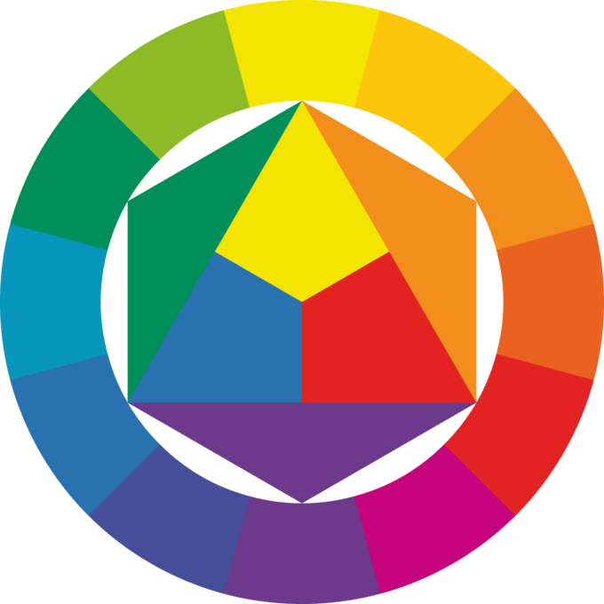

Level 1/8
Intro til kontrast
Kontrast er forskellen mellem to farver eller elementer.
Høj kontrast gør indhold lettere at se og læse, mens lav kontrast kan gøre tekst og elementer svære at skelne fra hinanden.

Kontrast hjælper med at gøre vigtige elementer mere tydelige i et design.